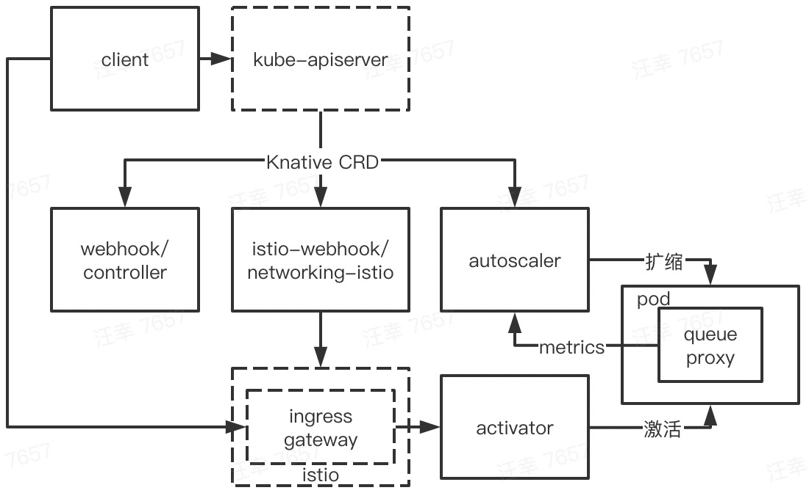
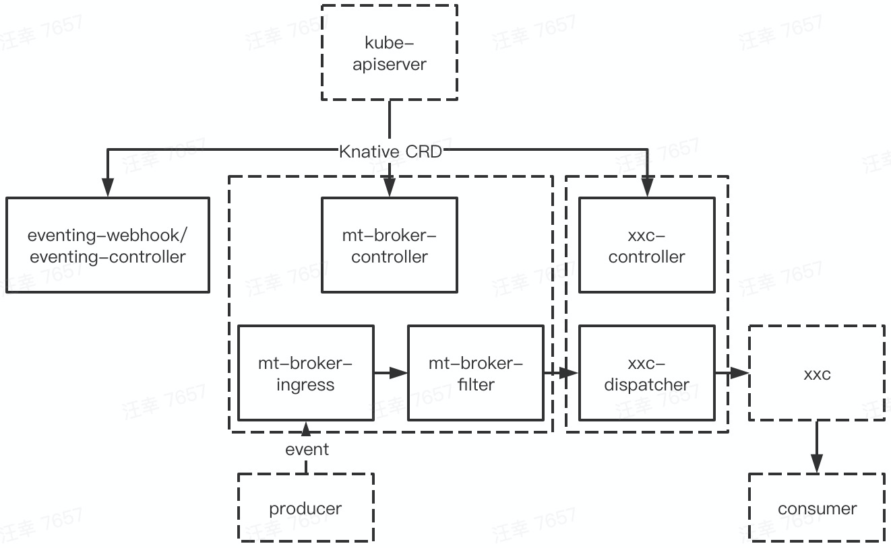

本文基于 Knative serving，eventing v0.17.0 版本
最近 release
开始学习之前，先看看本 repo 最近在干什么
serving
- 0.17.0 [2020.08]
- Meta
- initialScale annotation to control the initial deployment size
- net-contour and net-kourier have moved to Beta
- Autoscaling
- Launched new KPA statuses, which permit significant simplification of the state machine in revision and KPA itself
- Concurrency & stat reporting rewrite in Activator
- Core API
- Leader Election enabled by default
- Adopt a two-lane work queue for our controllers to prevent starvation during global re-syncs pkg
- Networking
- Code in knative/serving/pkg/network is completely moved to knative/networking repo
- Kingress (net-istio) introduces RewriteHost feature
- Meta
- 0.16.0 [2020.07]
- 0.15.0 [2020.05]
eventing
- 0.17.0 [2020.08]
- ContainerSource、SinkBinding is now in v1beta1
- Eventing conformance tests now can validate Sources status conformance
- PingSource now supports setting the time zone
- 0.16.0 [2020.07]
- 0.15.0 [2020.05]
serving、eventing 实际更新的内容很多，项目在很活跃的发展，全量更新可以自行点击链接确认
部署
结合实战来学习本 repo
安装
注：knative 0.17 需要 k8s 1.16+
安装 client
$ curl https://github.com/knative/client/releases/download/v0.16.0/kn-linux-amd64 -o kn \
&& chmod +x kn && sudo mv kn /usr/local/bin/
安装 istio
安装 knative 需要选择安装一个网络层，可选的包括 Ambassador、Contour、Gloo、Istio、Kong、Kourier，这里选择 istio
安装 istio client
$ curl -L https://github.com/istio/istio/releases/download/1.6.8/istio-1.6.8-linux-amd64.tar.gz -o istio-1.6.8.tar \
&& tar -xf istio-1.6.8.tar && sudo mv istio-1.6.8/bin/istioctl /usr/local/bin/
安装 istio server
本篇不是对 istio 做介绍，这里就选用最简单的方式，通过 istio operator 来安装 istio server
$ cat istio-minimal-operator.yaml
apiVersion: install.istio.io/v1alpha1
kind: IstioOperator
spec:
values:
global:
proxy:
autoInject: disabled
useMCP: false
jwtPolicy: first-party-jwt
addonComponents:
pilot:
enabled: true
prometheus:
enabled: false
components:
ingressGateways:
- name: istio-ingressgateway
enabled: true
- name: cluster-local-gateway
enabled: true
label:
istio: cluster-local-gateway
app: cluster-local-gateway
k8s:
service:
type: ClusterIP
ports:
- port: 15020
name: status-port
- port: 80
name: http2
- port: 443
name: https
$ istioctl manifest apply -f istio-minimal-operator.yaml
确认部署组件都已正常工作
$ kubectl -n istio-system get pod
NAME READY STATUS RESTARTS AGE
cluster-local-gateway-647598f7cd-rrsvw 1/1 Running 0 41h
istio-ingressgateway-75d5967d8c-pr2t5 1/1 Running 0 41h
istiod-95c865c7b-c9cmv 1/1 Running 0 41h
安装 serving
$ kubectl apply -f https://github.com/knative/serving/releases/download/v0.17.0/serving-crds.yaml
$ kubectl apply -f https://github.com/knative/serving/releases/download/v0.17.0/serving-core.yaml
$ kubectl apply -f https://github.com/knative/net-istio/releases/download/v0.17.0/release.yaml
如果目标 k8s 集群有 loadBalancer service 的处理能力，那么可以参考官方文档做一下 dns 配置。如果没有的话，可以先用一些比较简陋的方法，绕过这些配置，跑完完整流程
$ export INTERNAL_INGRESS_HOST=$(kubectl -n istio-system get svc cluster-local-gateway -o jsonpath='{.spec.clusterIP}')
确认部署组件都已正常工作
$ kubectl -n knative-serving get pod
NAME READY STATUS RESTARTS AGE
activator-68cbc9b5c7-c5t92 1/1 Running 0 42h
autoscaler-5cf649dbb-w8gsn 1/1 Running 0 42h
controller-bc8d75cbc-4b58w 1/1 Running 0 42h
istio-webhook-6dd89ff45d-cr56j 1/1 Running 0 40h
networking-istio-5d68bb7d56-qrlfh 1/1 Running 0 40h
webhook-85758f4589-mckkp 1/1 Running 0 42h
验证 serving
$ kn service create hello-serving --image gcr.io/knative-samples/helloworld-go@sha256:5ea96ba4b872685ff4ddb5cd8d1a97ec18c18fae79ee8df0d29f446c5efe5f50
Creating service 'hello-serving' in namespace 'default':
0.011s The Configuration is still working to reflect the latest desired specification.
0.043s The Route is still working to reflect the latest desired specification.
0.057s Configuration "hello-serving" is waiting for a Revision to become ready.
10.940s ...
10.999s Ingress has not yet been reconciled.
11.055s ...
11.077s Waiting for load balancer to be ready
11.279s Ready to serve.
Service 'hello-serving' created to latest revision 'hello-serving-fbksc-1' is available at URL:
http://hello-serving.default.example.com
# 如果上面有配置过 dns，则直接用普通的 curl 就可以了
$ curl -H "Host: hello-serving.default.example.com" http://$INTERNAL_INGRESS_HOST
Hello World!
安装 eventing
$ kubectl apply -f https://github.com/knative/eventing/releases/download/v0.17.0/eventing-crds.yaml
$ kubectl apply -f https://github.com/knative/eventing/releases/download/v0.17.0/eventing-core.yaml
$ kubectl apply -f https://github.com/knative/eventing/releases/download/v0.17.0/in-memory-channel.yaml
$ kubectl apply -f https://github.com/knative/eventing/releases/download/v0.17.0/mt-channel-broker.yaml
确认部署组件都已正常工作
$ kubectl -n knative-eventing get pod
NAME READY STATUS RESTARTS AGE
eventing-controller-7558c947d-jgmpt 1/1 Running 0 20h
eventing-webhook-847f56845b-67j8v 1/1 Running 0 20h
imc-controller-7c95488bb5-sqmvm 1/1 Running 0 19h
imc-dispatcher-7fdfff678-rcf2g 1/1 Running 0 19h
mt-broker-controller-b5f997765-cwzwx 1/1 Running 0 19h
mt-broker-filter-657cbfbcf6-7pzkj 1/1 Running 0 19h
mt-broker-ingress-6b5598b45d-pbzf7 1/1 Running 0 19h
验证 eventing
验证用的4个 yaml 文件：
$ cat broker.yaml
apiVersion: eventing.knative.dev/v1
kind: broker
metadata:
name: default
namespace: hello-eventing
$ cat consumer.yaml
apiVersion: apps/v1
kind: Deployment
metadata:
name: hello-display
namespace: hello-eventing
spec:
replicas: 1
selector:
matchLabels: &labels
app: hello-display
template:
metadata:
labels: *labels
spec:
containers:
- name: event-display
image: gcr.io/knative-releases/knative.dev/eventing-contrib/cmd/event_display@sha256:49dac8ea142b5d00bbb4b12f6a9cacb2b7826f36037e2d34d304cdcd289233c3
---
kind: Service
apiVersion: v1
metadata:
name: hello-display
namespace: hello-eventing
spec:
selector:
app: hello-display
ports:
- protocol: TCP
port: 80
targetPort: 8080
$ cat trigger.yaml
apiVersion: eventing.knative.dev/v1
kind: Trigger
metadata:
name: hello-display
namespace: hello-eventing
spec:
broker: default
filter:
attributes:
type: greeting
subscriber:
ref:
apiVersion: v1
kind: Service
name: hello-display
$ cat producer.yaml
apiVersion: v1
kind: Pod
metadata:
labels:
run: curl
name: curl
namespace: hello-eventing
spec:
containers:
# This could be any image that we can SSH into and has curl.
- image: radial/busyboxplus:curl
imagePullPolicy: IfNotPresent
name: curl
resources: {}
stdin: true
terminationMessagePath: /dev/termination-log
terminationMessagePolicy: File
tty: true
$ kubectl create ns hello-eventing
$ kubectl apply -f broker.yaml -f consumer.yaml -f trigger.yaml -f producer.yaml
$ kubectl -n hello-eventing attach curl -it
[ root@curl:/ ]$ curl "http://broker-ingress.knative-eventing.svc.cluster.local/hello-eventing/default" -X POST -H "Ce-Id: say-hello" -H "Ce-Specversion: 1.0" -H "Ce-Type: greeting" -H "Ce-Source: not-sendoff" -d {"msg":"hello, world!"}
[ root@curl:/ ]$ exit
$ kubectl -n hello-eventing logs -l app=hello-display --tail=2
Data,
{msg:hello, world!}
架构
安装完 Knative 之后，来梳理下安装的组件
| namespace | pod | 命令 | 源码 repo |
|---|---|---|---|
| knative-serving | istio-webhook | webhook | net-istio |
| networking-istio | controller | net-istio | |
| webhook | webhook | serving | |
| controller | controller | serving | |
| activator | activator | serving | |
| autoscaler | autoscaler | serving | |
| knative-eventing | eventing-webhook | webhook | eventing |
| eventing-controller | controller | eventing | |
| imc-controller | channel_controller | eventing | |
| imc-dispatcher | channel_dispatcher | eventing | |
| mt-broker-controller | mtchannel_broker | eventing | |
| mt-broker-filter | filter | eventing | |
| mt-broker-ingress | ingress | eventing | |
| istio-system | istiod | pilot-discovery | istio |
| istio-ingressgateway | pilot-agent | istio | |
| cluster-local-gateway | pilot-agent | istio |
注：
- istiod、istio-ingressgateway 和 cluster-local-gateway 是 istio 相关组件，暂不过多说明
- 很多二进制都叫 webhook、controller，但他们并无联系，只不过都是通用的 webhook/controller 模型
- 除了上述组件之外，serving 还会给用户 pod 插入一个 queue-proxy 的容器
serving 整体架构是：

其中：
- kn client 封装了网络调用
- webhook/controller 负责 serving 内部各种 CRD 的初始化、校验和流程管理
- istio-webhook/networking-istio 负责 Knative-istio 间 CRD 的转换，以调用 istio 的能力
- 当副本为0时，ingress gateway 会将请求转发至 activator，触发 pod 0->1 的扩容
- queue-proxy 会采集容器 metrics，并上报给 autoscaler
- autoscaler 处理扩缩相关逻辑，包括根据 metrics，完成 pod 动态扩缩
eventing 整体架构是：

其中：
- webhook、controller 相关组件基本工作于控制面
- eventing-webhook/eventing-controller 负责 eventing 大部分 CRD 的处理
- mt-broker-controller(mt: multi tenant) 负责 broker 相关的逻辑
- xxc-controller 负责对应 channel 相关逻辑，缺省安装的是 imc(imc: in memory channel)
- 其它组件工作于数据面
- mt-broker-ingress 是 broker 的入口，mt-broker-filter 负责按用户配置做分发过滤
- xxc-dispatcher 负责 event 的接收、转发，而 xxc 则是对应的 channel provider，如 kafka。imc 比较特殊，相应功能直接在 dispatcher 里实现的
在使用小节会结合实例来详细说明